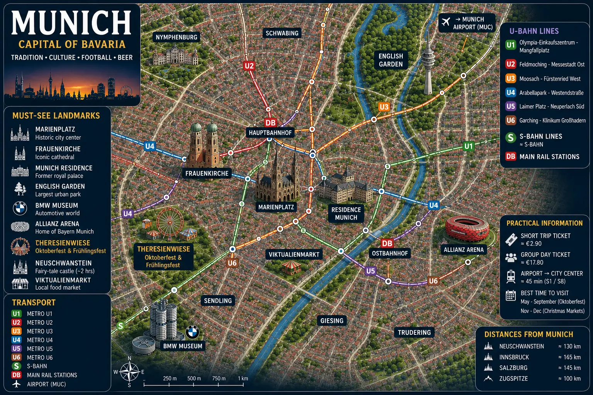
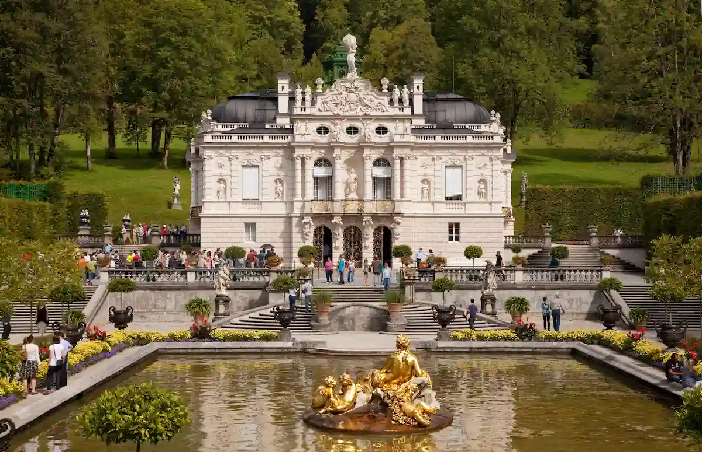

Munich
Explore Munich through historic biergartens, the Allianz Arena, Bavarian palaces, Christmas markets and Alpine landscapes.
Allianz Arena • Marienplatz • BMW • Oktoberfest • Bavaria
Biergartens, local specialties and a unique atmosphere.
Subway, trams and trains make it easy to explore the city.
Neuschwanstein, the Bavarian Alps, Salzburg and Alpine lakes.
Oktoberfest, Christmas markets, festivals, concerts and major Bavarian events.
View the events guide →The capital of Bavaria, Munich is known for its perfect blend of Bavarian traditions, elegant architecture and European modernity.
From Marienplatz to the Allianz Arena, from historic biergartens to world-class museums, the city offers a unique combination of culture, gastronomy and football.
With Oktoberfest, Christmas markets, royal palaces and excursions into the Alps, Munich is one of Germany’s most iconic destinations.

From Bavarian traditions and royal palaces to European football and Alpine adventures, Munich offers unique experiences that leave lasting memories.

The fairy-tale castle that inspired Disney. Nestled in the Bavarian Alps, it is one of Germany's most visited landmarks.
🎟️ View tickets
Go behind the scenes of Bayern Munich's stadium and discover one of Europe's most impressive sporting venues.
🎟️ Book the tour
Share a large Bavarian table beneath chestnut trees and enjoy the friendly atmosphere that makes Munich famous.

The historic heart of Munich, known for its iconic town hall, elegant facades and authentic Bavarian atmosphere.

One of Europe's largest urban parks, home to surfers, biergartens and vast green spaces.

Travel from Munich to discover two of Bavaria's most iconic castles on a spectacular journey through royal palaces and Alpine scenery.
🎟️ View the tourThe MVV network makes it easy to reach Marienplatz, the Central Station, Allianz Arena, the English Garden, museums and Munich's main districts.
Official MVV Website →A practical pass that includes public transportation and discounts on many attractions, museums and experiences across Munich.
Discover the pass →Munich is a fantastic city to explore by bicycle thanks to its cycling paths, parks, riverside routes and pleasant city-center rides.
Rent a bike →A car can be useful for exploring Bavarian castles, Alpine lakes, the Romantic Road and other destinations around Munich.
Book a car →Berlin, Frankfurt, Salzburg, Nuremberg and the Bavarian Alps are easily accessible thanks to Munich's extensive rail connections.
Book a train →Munich Airport is one of Germany's largest hubs and offers quick access to the city center via the S-Bahn network.
Flights & information →The best choice for a first visit. You'll stay in the heart of Munich, close to the city's major landmarks, restaurants and must-see attractions.
A lively and elegant district known for its cafés, biergartens, boutiques and proximity to the English Garden.
Perfect for travelers looking for a quieter environment near green spaces and walking paths while remaining just minutes from the city center.
Convenient for train arrivals and day trips to the Alps, Salzburg and other major German cities.
A great option for football fans who want to stay close to Bayern Munich's stadium and major transportation links.
Compare accommodation options across Munich's main districts.
From traditional biergartens and Bavarian specialties to food markets and contemporary restaurants, Munich offers one of Germany's most authentic culinary experiences.

Share a large table beneath the trees and experience one of Munich's most iconic traditions with Bavarian beer and regional specialties.
Munich's famous food market brings together local producers, Bavarian specialties and lively terraces in the heart of the historic center.
🎟️ Book a Viktualienmarkt food tourAround Munich's main square, numerous historic breweries and traditional restaurants offer an authentic taste of Bavarian cuisine.
From fairy-tale castles and Alpine lakes to Bavarian villages and spectacular mountain peaks, the surroundings of Munich offer some of Germany's finest day trips.

Nestled in the Bavarian Alps, Neuschwanstein is one of Europe's most famous landmarks and is believed to have inspired Disney's castles.
🏰 View the tour →Mozart's birthplace charms visitors with its UNESCO-listed historic center, baroque architecture and beautiful Alpine setting.
🇦🇹 Discover Salzburg →Reach Germany's highest peak and enjoy breathtaking views over the Bavarian and Austrian Alps.
🏔️ Discover Zugspitze →Surrounded by mountains, Lake Tegernsee is one of Bavaria's favorite nature escapes, located less than an hour from Munich.
Discover medieval villages, historic walls and postcard-worthy landscapes along one of Germany's most famous scenic routes.
🛣️ View the tour →
Fly above Munich, Neuschwanstein Castle and the Bavarian Alps while enjoying spectacular aerial views of southern Germany.
✈️ Book the flight →From European football and Oktoberfest to international concerts and immersive experiences, Munich is one of Germany's most exciting destinations for unforgettable events.

Watch a Bayern Munich match or visit the Allianz Arena, one of the most impressive football stadiums in Europe.
🎟️ View ticketsThe world's most famous beer festival attracts millions of visitors every year who come to experience authentic Bavarian traditions.
🍺 Book the experienceEnjoy the famous Candlelight concerts in some of Munich's most iconic venues for a unique musical experience illuminated by candlelight.
🎻 View concertsA spectacular immersive experience combining music and breathtaking aerial light choreographies performed by hundreds of drones.
🚁 Discover the eventMunich hosts international concerts, live performances and cultural events throughout the year in its major venues and arenas.
🎟️ View eventsGerman is the official language. English is widely spoken in hotels, restaurants, tourist attractions and public transportation.
The euro (€) is used throughout Munich. Credit cards are accepted in most places, although some traditional establishments still prefer cash payments.
Germany uses type C and F plugs with a 230 V supply. Most European travelers will not need an adapter.
Three to four days are ideal for exploring Munich's main districts, biergartens, museums, Allianz Arena and top attractions.
From May to October for outdoor events and biergarten culture. September is especially popular thanks to Oktoberfest.
For a comfortable stay, expect to spend between €120 and €250 per day depending on your accommodation, activities and dining choices.
Excursions to Neuschwanstein, Linderhof and other Bavarian castles are extremely popular. During peak season, it is best to book several days in advance.
Munich also offers royal palaces, museums, parks, markets, biergartens and Alpine excursions that deserve plenty of attention.
The U-Bahn, S-Bahn, tram and bus network provides quick access to the city center, Allianz Arena, the train station and the airport.
Neuschwanstein, Salzburg, Zugspitze, Alpine lakes and the Romantic Road are among the best experiences available from Munich.
Even in summer, conditions can change quickly, especially in the Alps. Bring a light jacket or waterproof layer.
Two days are enough for the city center, but three to four days are recommended to enjoy museums, biergartens, palaces and nearby excursions.
Three to four days are ideal for exploring Munich's main districts, biergartens, museums, royal palaces and nearby day trips.
A trip to Neuschwanstein Castle is one of the most popular experiences. Within the city, Marienplatz and Allianz Arena are absolute highlights.
From May to October, the weather is generally pleasant for enjoying biergartens, parks and outdoor events. September is particularly popular because of Oktoberfest.
Munich is one of Germany's more expensive cities, especially for accommodation. However, public transportation and several attractions remain reasonably affordable.
The MVV network combines the U-Bahn, S-Bahn, trams and buses, making it easy to reach every part of the city.
Altstadt, Marienplatz, Schwabing, the English Garden and the Allianz Arena area are among the most interesting districts to discover.
The English Garden, Deutsches Museum, Allianz Arena, Nymphenburg Palace and several Alpine excursions are excellent family-friendly activities.
Yes. Munich has an extensive cycling network and many green spaces. Cycling is one of the best ways to explore the city and the English Garden.